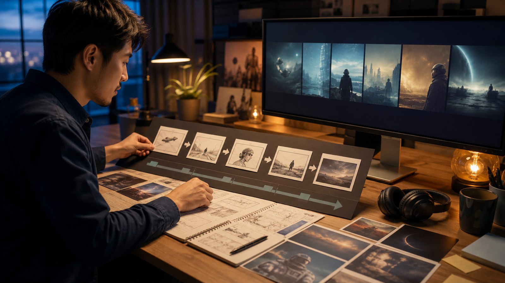

MiniMax H3 视频生成实战：用 ratio、时长与镜头表拆解 15 秒短片
调用视频生成 API 并不难，难的是让请求参数、提示词和剪辑计划指向同一条片子。本文用一个 15 秒短片示例，把 MiniMax H3 的 ratio、duration、异步任务和镜头表放进同一套流程。代码依据 2026年8月14日可见的 MiniMax 中国开放平台文档编写，但没有在真实账户中执行；接入前仍需由开发者逐项复核。

AI 协助说明： 本文由 AI 协助整理，经官方文档核对，不包含商业链接、联盟链接或跟踪参数。代码是待人工测试的示例，不代表已经成功调用线上接口。
先确认 MiniMax H3 的任务边界
MiniMax 视频生成文档当前列出的模型名为 MiniMax-H3，支持文本、图片、视频和音频输入，输出分辨率为 768P 或 2K，时长是 4—15 秒的整数。
视频生成采用异步流程：
POST /v2/video_generation创建任务，获得task_id；- 使用
task_id查询任务状态； - 成功后从
task.content.url取得视频地址并自行保存。
因此，接口返回 task_id 只说明任务已建立，不代表视频已经可用。
用镜头表拆解 15 秒短片
示例短片只表现一只透明玻璃杯接住晨光，水珠滑落，最后停在可加字幕的构图。先做镜头表：
| 镜头 | 时间 | 画面任务 | 主要动作 | 结束画面 |
|---|---|---|---|---|
| S01 | 0—4 秒 | 建立环境 | 晨光照到石台 | 杯子轮廓进入画面 |
| S02 | 4—10 秒 | 展示材质 | 一颗水珠沿杯壁滑落 | 水珠接近杯底 |
| S03 | 10—15 秒 | 提供落点 | 镜头轻微推进后停止 | 杯子偏左，右侧留白 |
如果直接把三个镜头塞进一次复杂生成，问题会难以定位。更稳妥的做法是按镜头分别创建任务，再在剪辑软件中组合。每个请求只保留一个主要动作。
文生视频请求中的 ratio 和 duration
V2 创建视频生成任务文档说明：当 content 只有文本时属于文生视频，ratio 必填且不能使用 adaptive。可选比例包括 21:9、16:9、4:3、1:1、3:4 和 9:16。
下面以 S02 为例创建一个 6 秒、16:9、2K 的文生视频任务：
export MINIMAX_API_KEY="请替换为本地安全保存的密钥"
curl --request POST \
--url https://api.minimaxi.com/v2/video_generation \
--header "Authorization: Bearer ${MINIMAX_API_KEY}" \
--header "Content-Type: application/json" \
--data '{
"model": "MiniMax-H3",
"content": [
{
"type": "text",
"text": "透明玻璃杯位于浅色石台中央，杯型和比例保持稳定。晨光从右侧照到杯壁，一颗水珠缓慢向下滑落。镜头为稳定近景，只做轻微推进。最后停在杯子偏左的构图，右侧保留字幕空间；不要生成品牌文字、Logo 或额外物件。"
}
],
"resolution": "2K",
"duration": 6,
"ratio": "16:9"
}'
请求成功时会返回类似结构：
{
"task_id": "424010985738629"
}
示例 ID 只用于说明字段位置，不能拿来查询真实任务。
图生视频不能只靠 ratio 改比例
比例行为会随模式变化：
- 文生视频：
ratio必须指定具体比例，不能用adaptive。 - 首帧或尾帧图生视频： 比例由输入图片决定，
ratio按adaptive处理；即使传入其他合法比例也会被忽略。 - 多模态参考生成：
ratio可省略并使用adaptive，也可以指定具体比例。
因此，首尾帧图生视频若需要 9:16，应该先把首帧和尾帧素材制作成一致的 9:16，而不是只在 JSON 中写 "ratio": "9:16"。
图生和参考生成也不能混在同一请求里。官方文档规定：一旦使用 reference_image、reference_video 或 reference_audio，就不能再同时使用 first_frame 或 last_frame。
查询任务状态
官方指南给出的查询路径为：
GET https://api.minimaxi.com/v2/query/video_generation/{task_id}
可以用 Python 做有限次数的轮询：
import os
import time
import requests
API_KEY = os.environ["MINIMAX_API_KEY"]
BASE_URL = "https://api.minimaxi.com"
HEADERS = {"Authorization": f"Bearer {API_KEY}"}
def wait_for_video(task_id: str, max_checks: int = 60) -> str:
url = f"{BASE_URL}/v2/query/video_generation/{task_id}"
for _ in range(max_checks):
time.sleep(10)
response = requests.get(url, headers=HEADERS, timeout=30)
response.raise_for_status()
task = response.json()["task"]
status = task["status"]
if status == "succeeded":
return task["content"]["url"]
if status in {"failed", "cancelled"}:
raise RuntimeError(
f"任务结束：{status}，错误：{task.get('error')}"
)
raise TimeoutError("任务在限定查询次数内未进入终态")
max_checks 是应用自行设置的保护条件，不是官方服务时限。官方示例采用 10 秒轮询间隔。生产环境还要处理网络超时、临时下载地址、日志脱敏和文件持久化。
参数和提示词分别记录
建议为每个镜头保存一份结构化记录：
{
"shot_id": "S02",
"model": "MiniMax-H3",
"resolution": "2K",
"duration": 6,
"ratio": "16:9",
"mode": "text-to-video",
"prompt_version": "v03",
"review_status": "pending"
}
提示词描述主体、动作、镜头、光线、声音和结束画面；参数控制模型、分辨率、时长和比例。分开记录后，修改动作时不必重新猜测本次任务到底用了哪个比例。
常见错误怎么排查
官方 API 参考列出了多类错误响应：
400：请求参数无效，例如缺少非空文本；401：认证信息缺失或错误；402：账户余额不足；422：内容检查未通过；429：触发速率限制；500：服务端错误。
不要对所有错误使用同一种重试策略。参数错误需要修正请求；429 或临时服务错误才可能适合有限重试。即使状态为 succeeded，文件仍要检查尺寸、时长、是否可解码，以及人物、产品、文字和声音是否符合要求。
发布前检查
- 代码和字段已由开发者按最新官方文档复核。
- 示例已在授权测试环境运行，或明确保留“未执行”说明。
- 密钥只从环境变量或密钥管理系统读取。
- 每个镜头只有一个主要动作。
- 图生视频的输入图片比例与目标一致。
- 任务参数、提示词版本和审核状态有记录。
- 生成素材没有冒充真实用户证言、新闻画面或产品承诺。
- 精确文字、Logo、价格和规格在后期加入并核对。
结语
15 秒短片的稳定性不只取决于提示词。镜头表负责拆分叙事，duration 负责约束单个任务，ratio 需要按生成模式正确设置，异步查询则把任务结果带回剪辑流程。把这四部分记录清楚，出现问题时才能判断应该改分镜、改素材、改参数，还是直接拒绝这条生成结果。
建议标签： MiniMax H3、AI视频生成、Prompt工程、API
摘要： 用镜头表拆解 15 秒短片，并通过 MiniMax H3 V2 API 创建和查询任务，理解文生、图生与参考生成的 ratio 差异。